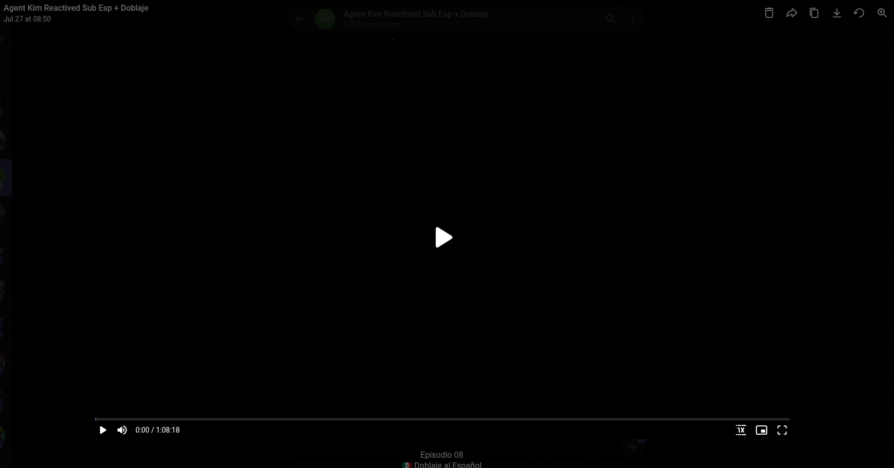
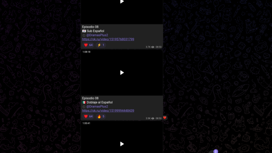
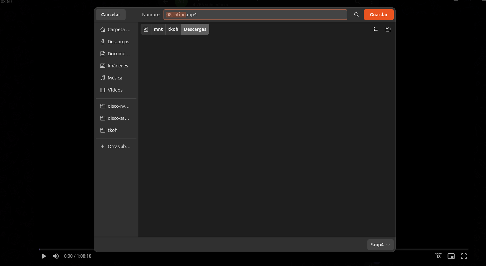

Unhide the native download button in Telegram Web's media viewer and Stories. Download videos, photos, audio and documents directly — no media capture, no local storage, no sign-ups.

Simple in concept, solid in practice.
Telegram Web already has a download button — it just hides it. This extension removes the CSS hide class so the real button reappears.
Works with videos, photos, audio files and documents — any media you can open in the Telegram Web viewer.
The download button is also unhidden inside the Stories viewer, so you can save story media too.
No media is intercepted, captured or stored locally. You download directly from Telegram's own CDN via their native button.
A minimal content script runs every 500 ms. No heavy frameworks, no background noise.
Install and it just works. No options, no configuration, no permissions beyond web.telegram.org.
Screenshots from the actual extension in use.

Open any media to launch the Telegram Web viewer.
The native download button is now visible.

Click to download — Telegram handles the rest.
Three simple steps — that's all it takes.
Load the extension in Chrome via chrome://extensions/ as an unpacked extension.
Click the now-visible native download button. Telegram handles the download via its CDN.
chrome://extensions/, enable Developer mode, click Load unpacked and select the extracted folder.Download the ready-to-load Chrome extension package (ZIP). Compatible with Chrome, Edge, Brave and Opera.
Download extension ZIP28 KB • Manifest V3 • Apache 2.0